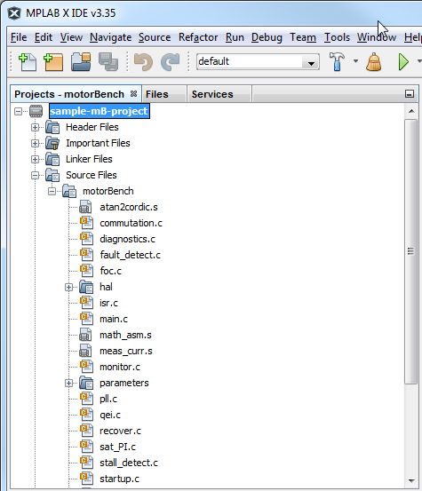
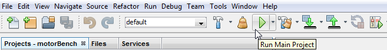

2. 快速入门¶
要开始使用电机控制应用框架，请按照 motorBench® Development Suite的发行说明中的指引操作。它将引导您完成以下步骤：
输入配置信息
自整定（self-commissioning）以识别电机参数
自动整定（autotuning）以计算控制器增益
生成文件以产生源代码
此时，您的 MPLAB® X 项目中将包含由电机控制应用框架生成的代码，您可以在项目的“Header Files”和“Source Files”文件夹中浏览这些文件：

现在您可以点击 MPLAB® X 工具栏上的“Run Main Project”（运行主项目，播放按钮）来构建项目并对器件编程：
